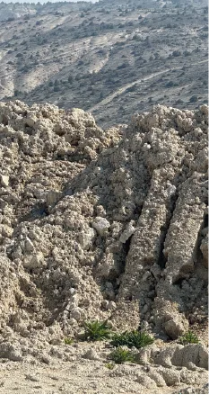
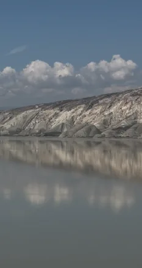
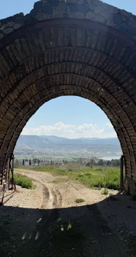

These narratives, adapted from “Chapter IV: Excerpts from Çayırhan’s Past” of Prof. Dr. Suna Kili’s pioneering monographic work, Çayırhan (1978) (pp. 21-29), reflect the social transformation processes of the region through the raw and unfiltered voices of people who directly witnessed that period, by addressing the concept of land from different perspectives.
Land should not be seen merely as an agricultural means of production or a piece of land occupying space on the earth. Land is also a source of identity, memory, livelihood, and struggle.

Land is a place of rights and justice. In this section, both the landlord and the state are against the people. Neither the sultan, nor the court, nor the law enforcement is on the side of the people. But the people of Çayırhan are resisting. This is a popular initiative and a resistance force resorted to for their land in order to survive against the oppression that has continued for years; it is the result of the accumulation of ages.

Land is a cultural memory and a lost homeland. This section interprets the impact of the construction of the Sarıyar Dam. The dam is a state initiative. This initiative has given rise to migration to the new village, new difficulties, new struggles, and a new type of “Lake Lord.” In this formation, a new popular initiative has emerged in the face of the state-people-lord relations.

Land is an underground capital and an industrial basin. This section discusses the discovery of lignite coal. The purchase of the mines by the Turkish Coal Enterprises, the workers’ movements, and the popular initiative arising from the workers’ movement are mentioned. This is an attempt to organize through unionization, thus gaining new economic, social, and political rights.